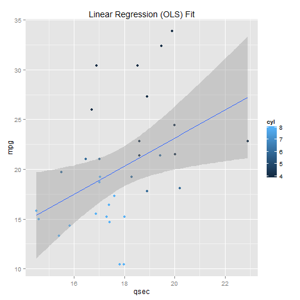

- The application is meant to provide a simple visualization for the mtcars dataset.
There are two tabs on the web application. - The first tab displays some reactive displays of the values of the variable selected from the dropdown. It also displays the summary of the selected variable.
- The number of data tuples displayed can be changed as well.
- The second tab displays linear regression (OLS) model fits for different independent variables 9can be selected from drop down list). Also a 3rd variable
value is shown by color coding, which can also be selected from another drop down. Accordingly the OLS model changes. - The R code snippet on the next slide show the figures that are shown reactively.
Reproducible Pitch Presentation
Developing Data Products
Sandipan Dey
Data Scientist
The first tab provides some basic exploratory analysis on a variable, while the second tab visualizes a predictive modeling (in terms of OLS fitting) to model the variable mpg (miles per gallon) as a linear function of the input variable chosen from the drop down.
If one selects the "mpg" variable on the first tab, the summary and the values for the the variable will be shown in a tabular format as shown below, although the implementation will be reactive w.r.t. the variable selected.
summary(mtcars$mpg)
## Min. 1st Qu. Median Mean 3rd Qu. Max.
## 10.4 15.4 19.2 20.1 22.8 33.9
- If on second tab, one selects the "wt" as the independent variable ans "cyl" as color, the following model will be fit
library(ggplot2)
qplot(wt, mpg, data=mtcars, geom=c("point", "smooth"),
method="lm", formula=y~x, color=cyl,
main="Linear Regression (OLS) Fit",
xlab="wt", ylab="mpg")

- On the other hand, in the second tab, if one selects "qsec" as the independent variable ans "cyl" as color, the following model will be fit.
library(ggplot2)
qplot(qsec, mpg, data=mtcars, geom=c("point", "smooth"),
method="lm", formula=y~x, color=cyl,
main="Linear Regression (OLS) Fit",
xlab="qsec", ylab="mpg")
